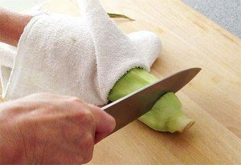

Place the corn in the microwave, do not remove the husk. Microwave the corn on the high setting for 4 minutes. Note that every microwave is different. If this timing over-cooks the corn in your microwave, reduce it to 2 to 3 minutes the next time.

Use a kitchen towel or pot holder to remove corn from the microwave (it's hot!) Cut off the bottom of the corn, stem end, about one row of corn in from the stem.